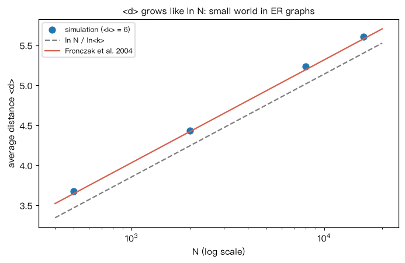

Example14 / 15
ER 网络平均距离随 N 的对数增长
固定
Output输出图

Output文字输出
N= 500: 模拟 <d>=3.68 | lnN/ln<k>=3.47 | 修正公式=3.65 N= 2000: 模拟 <d>=4.43 | lnN/ln<k>=4.24 | 修正公式=4.42 N= 8000: 模拟 <d>=5.24 | lnN/ln<k>=5.02 | 修正公式=5.19 N=16000: 模拟 <d>=5.61 | lnN/ln<k>=5.40 | 修正公式=5.58
Code代码
# 固定 <k>=6，N 从 500 增加到 16000，在最大连通分支上用若干源点的 BFS 估计平均距离 <d>，
# 与 ln N / ln<k> 以及 Fronczak 等（2004）的修正公式 (ln N - γ_E)/ln<k> + 1/2 比较（γ_E 为欧拉常数）。
# 输出：<d> 随 N 对数增长；修正公式与模拟的差距明显小于粗略公式。
import networkx as nx
import numpy as np
c, gamma_E = 6.0, 0.5772156649
rng = np.random.default_rng(1)
Ns, ds = [], [] # 存下结果用于作图
for N in [500, 2000, 8000, 16000]:
G = nx.fast_gnp_random_graph(N, c / (N - 1), seed=N)
G = G.subgraph(max(nx.connected_components(G), key=len))
src = rng.choice(list(G), size=200, replace=False)
d = np.mean([np.mean(list(nx.single_source_shortest_path_length(G, s).values())[1:]) for s in src])
Ns.append(N); ds.append(d)
print("N=%5d: 模拟 <d>=%.2f | lnN/ln<k>=%.2f | 修正公式=%.2f"
% (N, d, np.log(N) / np.log(c), (np.log(N) - gamma_E) / np.log(c) + 0.5))
# 作图：平均距离随 N（对数轴）的增长，与两条理论曲线比较
import matplotlib.pyplot as plt
nn = np.logspace(np.log10(400), np.log10(20000), 50)
fig, ax = plt.subplots(figsize=(6.4, 4.2))
ax.plot(Ns, ds, "o", ms=7, label="simulation (<k> = 6)")
ax.plot(nn, np.log(nn) / np.log(c), "--", color="0.5", label="ln N / ln<k>")
ax.plot(nn, (np.log(nn) - gamma_E) / np.log(c) + 0.5, "-", color="#d6604d", label="Fronczak et al. 2004")
ax.set_xscale("log"); ax.set_xlabel("N (log scale)"); ax.set_ylabel("average distance <d>")
ax.legend(fontsize=8); ax.set_title("<d> grows like ln N: small world in ER graphs", fontsize=10)
plt.tight_layout(); plt.show()Run在浏览器中运行
首次加载 Python 环境约需 20–40 秒；可以修改参数后重新运行。